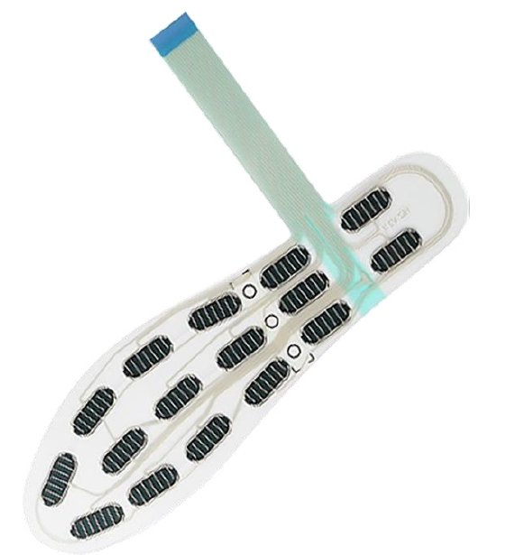

L'application n°1 « Semelle instrumentée pour le suivi médical » part d'un vrai dispositif et descend jusqu'à l'électronique. Le sujet est expliqué d'abord, puis les 14 questions sont corrigées comme un cours : ce qu'on te demande, ce qu'il faut savoir, la réponse, avec un schéma quand il aide. La correction est rédigée pour le site : aucun corrigé du professeur n'a été reçu.
Ce que raconte le sujet
Une équipe de l'Université Paris-Saclay a conçu une semelle pour suivre des patients diabétiques. Chez eux, les nerfs du pied sont abîmés : une plaie peut commencer sans douleur. La semelle ne cherche pas une mesure absolue très précise. Elle suit l'appui dans le temps, pour repérer une marche qui devient asymétrique (la claudication), signe d'une lésion qui commence.
Ce que la semelle embarque :
- 16 capteurs de force résistifs (semelle FS-INS-16Z), en deux réseaux de 8 ;
- un capteur de température et d'humidité ;
- une mesure de bio-impédance (circuit MAX30009) ;
- un microcontrôleur et un émetteur radio, le tout sur accumulateur.


Le sujet complet a quatre parties : appui plantaire, bio-impédance, transmission radio, synthèse. L'extrait reçu contient la première, « Analyse de l'appui plantaire », en trois temps :
| Partie | Questions | Ce qu'on fait |
|---|---|---|
| Le capteur de la semelle | 1 à 3 | sa surface, la force et la pression qu'il supporte, le cas d'un patient de 70 kg |
| Le banc de caractérisation | 4 à 8 | le capteur de référence FUTEK LSB200 et son amplificateur INA128 |
| Le montage de mesure | 9 à 12 | le modèle du capteur, le multiplexeur, la tension \(V_A\) lue par l'ADC |
| L'acquisition | 13 et 14 | la cadence de lecture, le débit binaire, le condensateur \(C_F\) |
La chaîne de mesure d'un capteur
Un capteur résistif ne donne pas une tension : sa résistance baisse quand on appuie (plus de 1 MΩ au repos). Pour que le microcontrôleur la lise, il faut la transformer en tension :
- le multiplexeur NX3L4051 choisit un des 8 capteurs du réseau, selon le code S3 S2 S1 ;
- l'AOP, avec \(R_G\) et \(C_F\), transforme la résistance du capteur choisi en une tension \(V_A\), filtrée ;
- l'ADC du microcontrôleur convertit \(V_A\) en un nombre sur 8 bits (entrée AIN1).
Les données du sujet
| Élément | Valeur |
|---|---|
| Capteur de la semelle | deux disques de diamètre \(D = 11\) mm, centres à \(L = 15\) mm, longueur totale \(LT = 26\) mm |
| Semelle FS-INS-16Z (DT1) | 16 points de mesure, 20 bornes (16 propres, 2 communes, 2 non utilisées), 253 mm de long, 0,4 mm d'épaisseur |
| Un capteur (DT1) | déclenchement à 500 g, plage de 500 g à 10 kg, plus de 1 MΩ au repos, réponse en moins de 10 µs, répétabilité ±10 % à 2 kg |
| Capteur de référence du banc | FUTEK LSB200, modèle FSH00107, pleine échelle 445 N, excitation 5 V |
| Montage de la figure 5 | \(V_{DD} = 3{,}3\) V, \(R_A = 110\) kΩ, \(R_B = 10\) kΩ, \(R_G = 750\) kΩ |
| Acquisition | marche intense : 120 pas par minute, au moins 20 points par pas, ADC 8 bits |
Les réponses s'appuient sur les documents du sujet : DT1 (semelle), DT2 (FUTEK LSB200), DT3 (INA128), DT4 (NX3L4051) et DR1 (courbe d'un capteur).
Question 1 : la surface d'un capteur
On te demande. La surface active a la forme de deux disques de diamètre \(D = 11\) mm dont les centres sont à \(L = 15\) mm, reliés par un rectangle (\(LT = 26\) mm). Détermine sa surface en mm².
Ce qu'il faut savoir.
- Une forme compliquée se calcule en la découpant en formes simples.
- Aire d'un disque : \(\pi D^2 / 4\). Aire d'un rectangle : longueur × largeur.
- Les cotes se vérifient : \(LT = L + D = 15 + 11 = 26\) mm.
Comment on raisonne.
- Trace un trait vertical par le centre de chaque disque : la forme se coupe en trois morceaux.
- Au milieu, entre les deux traits : un rectangle. Sa longueur est la distance entre les centres, \(L\) ; sa hauteur est le diamètre, \(D\).
- À gauche et à droite : deux demi-disques de diamètre \(D\). Mis bout à bout, ils font un disque entier.
- La surface totale est la somme des deux.
Réponse.
\[S = L\,D + \frac{\pi D^2}{4}\] \[S = 15 \times 11 + \frac{\pi \times 11^2}{4} = 165 + 95{,}0\] \[S \approx 260\ \text{mm}^2\]Question 2 : force et pression maximales
On te demande. Avec la documentation commerciale, détermine la force maximale en newtons pour rester dans la zone de mesure, puis la pression maximale en kPa.
Ce qu'il faut savoir.
- La fiche DT1 donne une masse : plage de sensibilité de 500 g à 10 kg (« sensitivity range »), déclenchement à 500 g (« actuation force »). La force correspondante est son poids, \(F = m\,g\), avec \(g = 9{,}81\) m/s².
- Une pression, c'est une force répartie sur une surface : \(P = F / S\), en pascals si \(F\) est en newtons et \(S\) en m².
- Conversion : 1 mm² = \(10^{-6}\) m², et 1 kPa = 1 000 Pa.
Comment on raisonne. La fiche parle en kilogrammes parce qu'on étalonne en posant des masses. Une masse de 10 kg posée sur le capteur appuie avec son poids. Le poids est une force : on le calcule avec \(F = m\,g\). Ensuite, la pression, c'est cette force répartie sur la surface trouvée à la question 1. Attention aux unités : la surface doit être en m² pour obtenir des pascals.
Réponse. Force maximale, à 10 kg :
\[F_{max} = m_{max}\,g\] \[F_{max} = 10 \times 9{,}81\] \[F_{max} = 98{,}1\ \text{N}\]Pression maximale, avec \(S = 260\) mm² \(= 260 \times 10^{-6}\) m² :
\[P_{max} = \frac{F_{max}}{S}\] \[P_{max} = \frac{98{,}1}{260 \times 10^{-6}}\] \[P_{max} \approx 377 \times 10^{3}\ \text{Pa} = 377\ \text{kPa}\]De la même façon, le seuil bas (500 g) donne 4,9 N, soit environ 19 kPa : en dessous, le capteur ne réagit pas.
Question 3 : un patient de 70 kg
On te demande. Pour un patient adulte de 70 kg et compte tenu de la géométrie de la semelle, chaque capteur peut-il rester dans sa zone de mesure pendant la marche ?
Ce qu'il faut savoir.
- Pendant la marche, il y a des instants où un seul pied porte tout le poids.
- Ce poids ne se répartit pas également : à l'attaque du talon, presque tout passe par les capteurs du talon.
- Une fiche se vérifie pour le pire cas, pas pour le cas moyen.
Comment on raisonne. On compare la force que reçoit un capteur à sa limite de 98,1 N (question 2), dans deux cas : le cas moyen (le poids réparti sur tous les capteurs), puis le pire cas (le poids concentré sur le talon). Si le pire cas dépasse la limite, la réponse est non.
Réponse. Poids du patient :
\[F = m\,g\] \[F = 70 \times 9{,}81\] \[F = 686{,}7\ \text{N}\]Cas moyen, poids réparti sur les 16 capteurs :
\[F_{capteur} = \frac{686{,}7}{16} \approx 42{,}9\ \text{N} < 98{,}1\ \text{N}\]Dans la plage. Mais à l'attaque du talon, la charge se concentre sur les deux capteurs du talon :
\[F_{capteur} = \frac{686{,}7}{2} \approx 343\ \text{N} > 98{,}1\ \text{N}\]Plus de trois fois la limite : ces capteurs saturent, ils lisent 98,1 N au plus.
Le plan de la semelle (DT1, photo plus haut) le confirme : le talon ne porte que deux zones sensibles, sur 48 mm de large.
Conclusion : non, pas à chaque instant. Ce n'est pas bloquant ici, parce qu'on cherche l'évolution et l'asymétrie de l'appui, pas une mesure absolue. La fiche le dit d'ailleurs : répétabilité de ±10 % à 2 kg, trop peu précis pour une mesure absolue, assez pour un suivi.